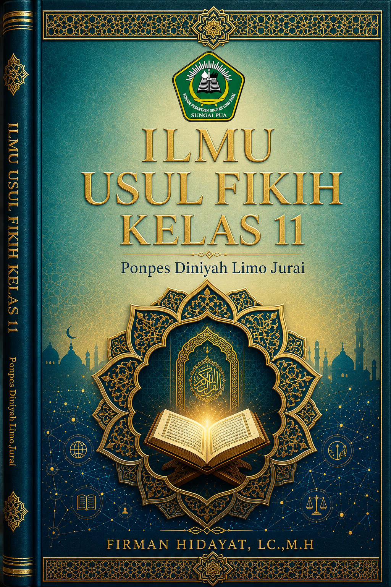

Panduan komprehensif memahami sumber-sumber hukum Islam (Al-Quran, Al-Sunnah, Ijma', dan Qiyas) dengan pendekatan modern, studi kasus kontemporer, dan analisis mendalam.

16 Bab yang disusun sistematis berdasarkan 10 pertemuan pembelajaran, dilengkapi dengan evaluasi tengah dan akhir semester.
Kedudukan Sunnah terhadap Al-Quran dan kriteria kesahihan hadits hukum.
Baca BabEvaluasi komprehensif materi Bab 1 s.d. 7 (Al-Quran, Sunnah, Ijma').
Akses Soal UTSKemaslahatan yang tidak disebut nash secara spesifik namun sesuai maqashid.
Baca BabPeran adat kebiasaan dan prinsip menutup jalan menuju kerusakan.
Baca BabPenerapan kaidah usul fikih pada isu modern (fintech, medis, lingkungan).
Baca BabPendalaman materi dengan contoh konkret, analisis kasus, dan materi video pendukung untuk setiap topik krusial.
Qiyas adalah menyamakan hukum suatu kasus yang tidak ada nash-nya (Furu') dengan kasus yang ada nash-nya (Ashl) karena adanya persamaan Illat (sebab hukum).
Contoh Kasus: Hukum mengonsumsi Narkoba (Sabu-sabu, Ekstasi, dll). Dalam Al-Quran dan Sunnah, tidak ditemukan kata "narkoba" secara eksplisit karena merupakan temuan modern. Namun, ulama melakukan Qiyas:
"ما حرم شربه حرم أكله"
"Apa yang diharamkan untuk diminum, maka diharamkan pula untuk dimakan/dikonsumsi."
Maslahah Mursalah adalah kemaslahatan yang tidak disyariatkan oleh nash secara spesifik (tidak ada dalil yang memerintahkan atau melarangnya), tetapi penjagaannya sejalan dengan tujuan syariat (Maqashid Syariah).
Contoh Kasus: Pembuatan peraturan lalu lintas (SIM, STNK, rambu lalu lintas), pencatatan pernikahan di KUA, atau kewajiban vaksin massal. Tidak ada nash spesifik yang memerintahkan "buat SIM", namun hal ini wajib diterapkan untuk menjaga Hifz al-Nafs (menjaga jiwa) dan Hifz al-Mal (menjaga harta) dari kecelakaan dan kekacauan.
Menjaga 5 hal pokok: Agama (Ad-Din), Jiwa (An-Nafs), Akal (Al-Aql), Keturunan (An-Nasl), dan Harta (Al-Mal).
Perbandingan mendalam antara dua metode istinbath hukum yang sering disalahpahami.
| Aspek Pembeda | Qiyas | Maslahah Mursalah |
|---|---|---|
| Definisi Inti | Menyamakan kasus baru dengan kasus lama karena persamaan Illat. | Menetapkan hukum berdasarkan kemaslahatan umum tanpa nash spesifik. |
| Syarat Utama | Harus ada Ashl (kasus asal) yang memiliki nash dan Illat yang jelas. | Tidak bertentangan dengan nash, ijma', dan harus bersifat rasional (Makul). |
| Contoh Aplikasi | Narkoba diqiyaskan ke Khamr (Illat: memabukkan). | Pencatatan pernikahan di KUA, pembuatan KTP, regulasi lalu lintas. |
| Kekuatan Hukum | Disepakati mayoritas ulama (Jumhur) sebagai sumber hukum ke-4. | Diterima kuat oleh Imam Malik dan ulama kontemporer untuk urusan pemerintahan (Siyasah Syar'iyyah). |
Daftar pustaka otoritatif dan terbaru yang menjadi rujukan penyusunan buku ini.
Abdul Wahhab Khallaf
Kairo: Dar al-Qalam, Edisi Cetak Ulang Terbaru, 2021.
"Kitab standar emas dalam studi Ushul Fikih di perguruan tinggi Timur Tengah."
Prof. Dr. Wahbah Az-Zuhaili
Damaskus: Dar al-Fikr, Edisi Revisi, 2022.
"Ensiklopedia komprehensif yang mengintegrasikan pandangan empat mazhab."
Tim Penyusun Kementerian Agama RI
Jakarta: Kemenag RI, Kurikulum Merdeka, 2022.
"Rujukan resmi kurikulum nasional yang disesuaikan dengan konteks Indonesia."
Dr. Muhammad Ali Hasan
Jakarta: Rajawali Pers, Edisi Terbaru, 2023.
"Pendekatan kontemporer dalam menyelesaikan masalah fikih modern."